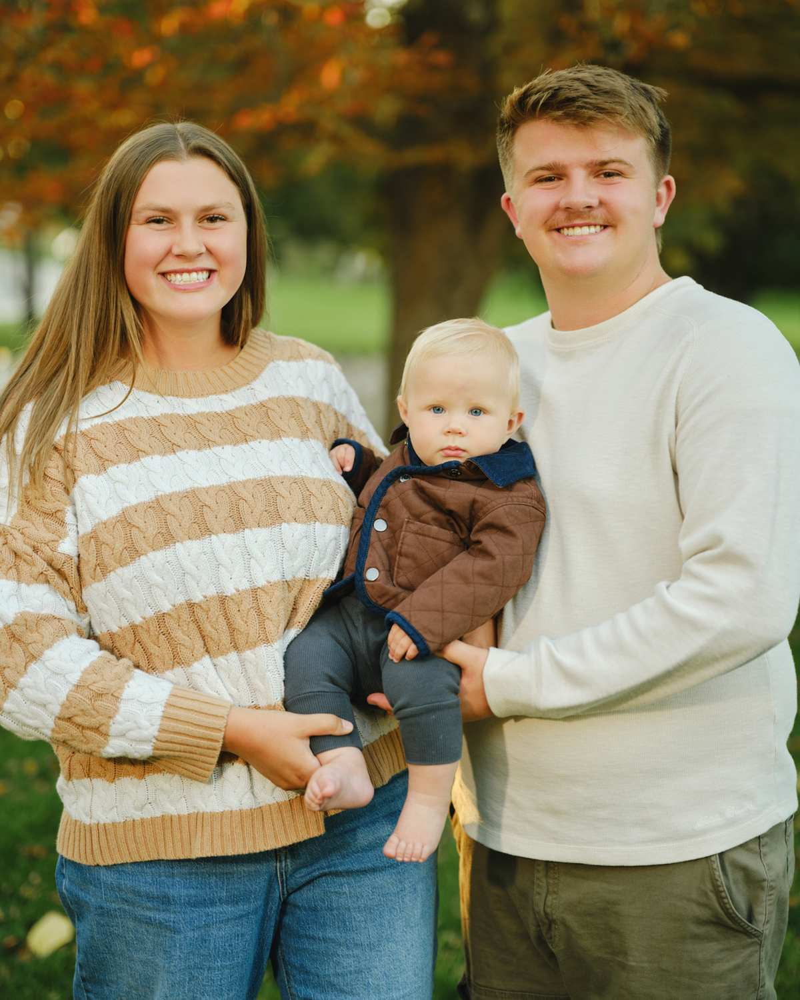
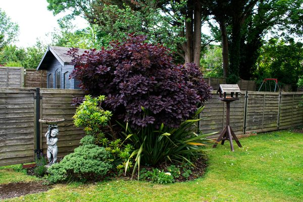
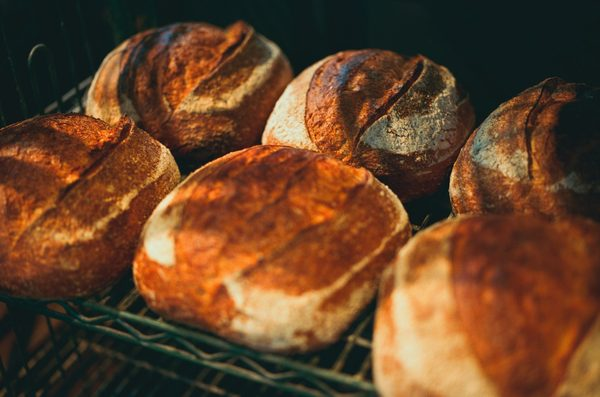

Web design · Cache Valley, Utah
Websites for the small businesses of northern Utah & southern Idaho.
I'm Gavin, a senior Computer Science student at Utah State University. I build clean, fast websites for local businesses so customers can find you, trust you, and get in touch.
Book a free quote callSee the work
Client work
Real work

Applegate Assisted Living
Assisted living community in Buhl, Idaho: services, amenities, a virtual tour, and tour scheduling.
Visit live site →Concept samples
Fictional businesses, built to show what yours could look like. Not client work.

Bear River Landscaping & Fence
Trade business: services, project gallery, quote request.
Willow & Wave Hair Studio
Salon: service menu with prices and easy booking.

Old Main Bakehouse
Food spot: menu highlights, hours, location.
Not sure what you want yet? Browse the template gallery →
My name is Gavin Whitaker. I'm a senior studying Computer Science at Utah State University and heading into software engineering. I'm married, with a baby boy who is 7 months old, and Cache Valley is home.
On the side, I build websites for small businesses across northern Utah and southern Idaho. I keep it simple: a site that works, looks right, and that you're proud to send people to.
Process
How it works
Call
A quick chat about your business, your customers, and what the site needs to do.
Design
I build a draft with your photos, services, and branding, then refine it with you.
Launch
Your site goes live on your domain, and I show you how to request updates.
Let's get your business online.
Simple sites starting at $500. Every quote is free and custom to what you actually need.
Book a free quote callgavin.r.whitaker@gmail.com